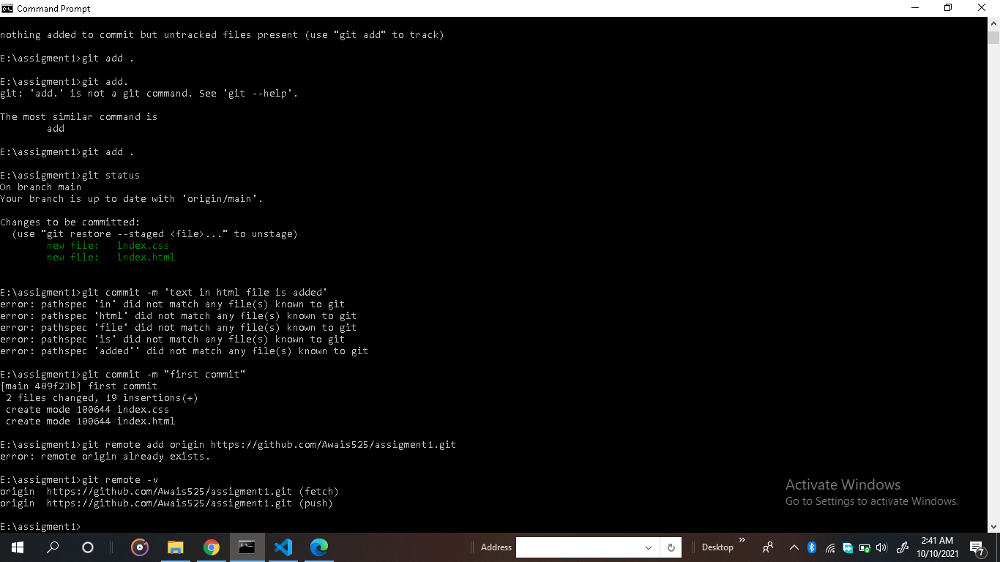

Add Origin
1-Type 'git remote add origin [copy https link]'
2-After enter this command ,you see this command will add on local Repository

you can check origin by type 'git remote -v'
Now you enter push command to push your code